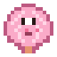
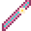
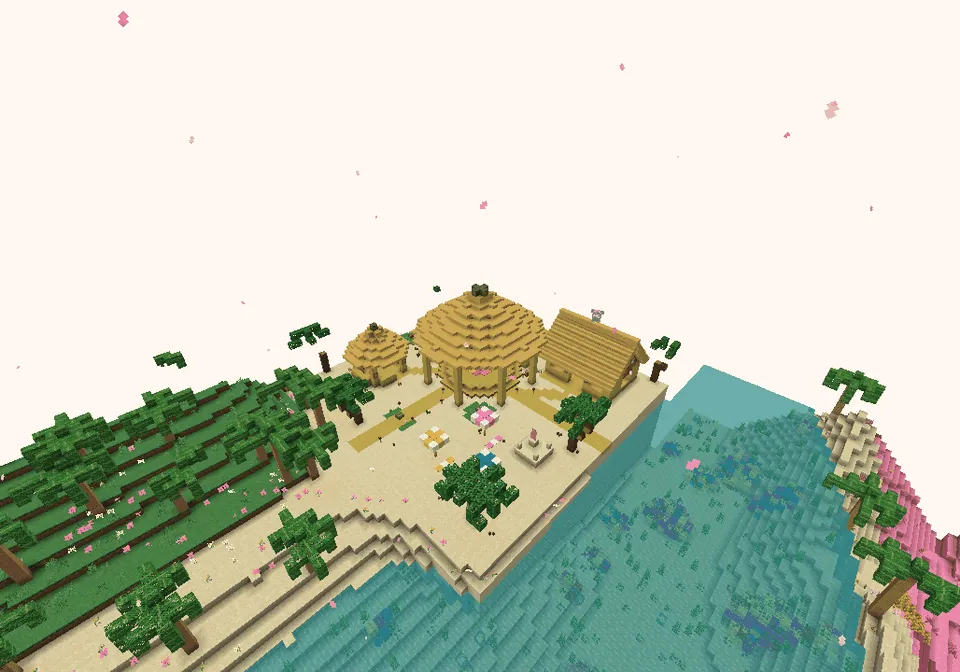

The surf beach of Guhwai'iHet surfstrand van Guhwai'i
On the other beach of the island: a round plaza with a hula podium under a big thatched hale, a flower arch, tiki torches, Lilo's surf shack with board racks, Tikiguh's round Tiki stall, a lifeguard chair, parasols, a sand castle and an outrigger canoe. Lilo-guh is here twice: one on the podium (hula) and one at the shack (surfing). Both games have the levels makkelijk, medium and lastig, their own boards (the world top 3 floats over the shack and the podium), and pay in schelpjesmunten. You can't get hurt or hungry while playing.
Aan het andere strand van het eiland: een rond plein met een hulapodium onder een grote rieten hale, een bloemenboog, tiki-fakkels, het surfhutje van Lilo met plankenrekken, het ronde Tiki-kraampje van Tikiguh, een strandwachtstoel, parasols, een zandkasteel en een vlerkkano. Lilo-guh is hier twee keer: een op het podium (hula) en een bij het hutje (surfen). Beide spelletjes hebben de niveaus makkelijk, medium en lastig, eigen borden (de top 3 van de wereld zweeft boven het hutje en het podium), en betalen in schelpjesmunten. Tijdens het spelen raak je niet gewond en krijg je geen honger.


PicturesPlaatjes
